Context 是什么、Context Engineering 解决什么问题、又是怎么解决的
不读全文也能知道这一期讲了什么
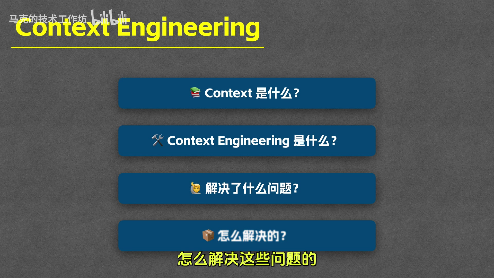
它的实现方法借鉴了 LangChain 的设计框架，划分为四类：保存 Context、选择 Context、压缩 Context、隔离 Context。
按原视频章节顺序
先分清「模型的输入」和「输入的容量上限」
单纯从外部来看，大模型就像是一个函数：你给它输入，它就会给你输出。
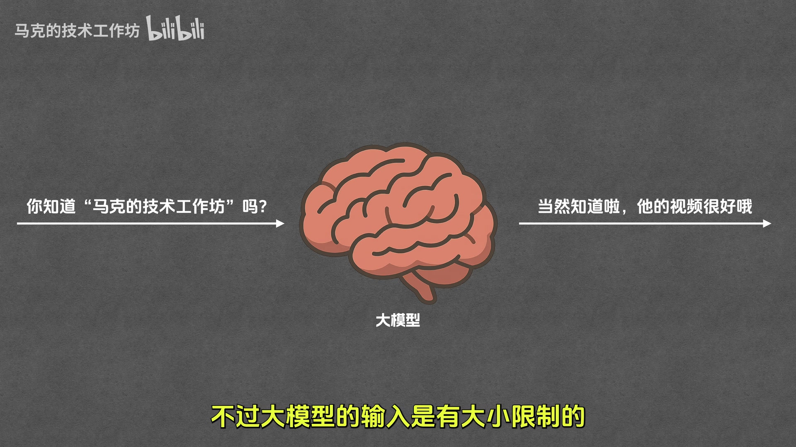
不过大模型的输入是有大小限制的，这个限制叫做上下文窗口，对应的英文为 Context Window。
这里的 Context 指的就是模型的输入，它包含的内容比一般人想象的要多：
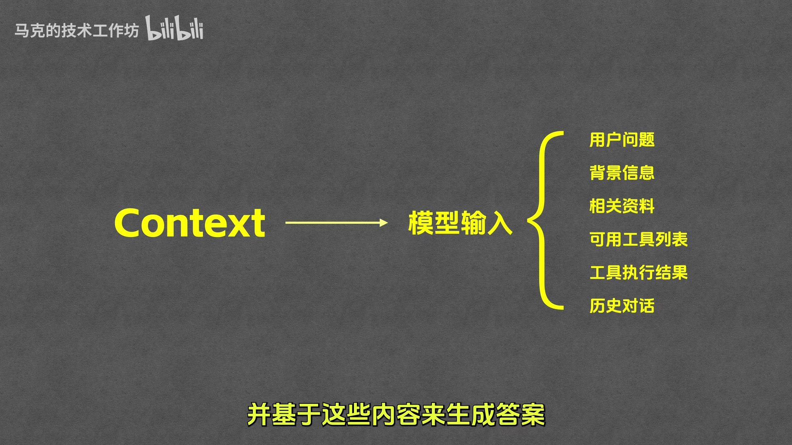
模型把这些输入作为上下文，并基于这些内容来生成答案。
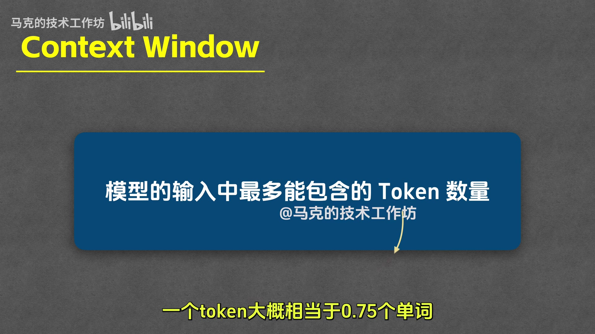
Context Window 指的是模型的输入中最多能够包含的 Token 数量。
Token 可以理解为文本被拆分成的最小单位，可能是一个字、一个词，或者是一个标点符号。 一个 Token 大概相当于 0.75 个单词，或者是 1.5 个汉字。
以 Gemini 2.5 Pro 为例，它的 Context Window 是 100 万，意思是它最多能够处理 100 万个 Token 的输入。
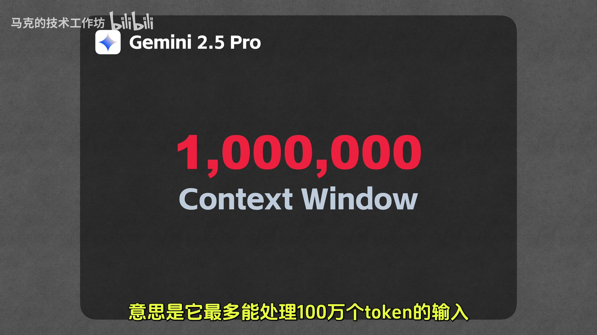
100 万个 Token 其实是一个相当大的容量，接近几本书的长度 —— 像 Gemini 2.5 Pro 这样的模型，可以一次装下好几本书。这个容量已经非常惊人了。
想让模型稳定、高效、准确地输出，绕不开这三件事
举个具体例子：假设你想做一个智能客服，希望它能回答用户提出的各种关于你们公司产品的问题。 大模型虽然很强，但直接问它的话，它只能回答「不知道」—— 毕竟它没有你们公司产品的信息。
你一想：没关系，我们不是有产品使用手册吗？直接丢给大模型就好了，让它根据手册来回答问题。 不管手册有几十页、几百页甚至上千页，都可以直接丢给模型，不用管哪些内容和用户问题相关、哪些不相关。
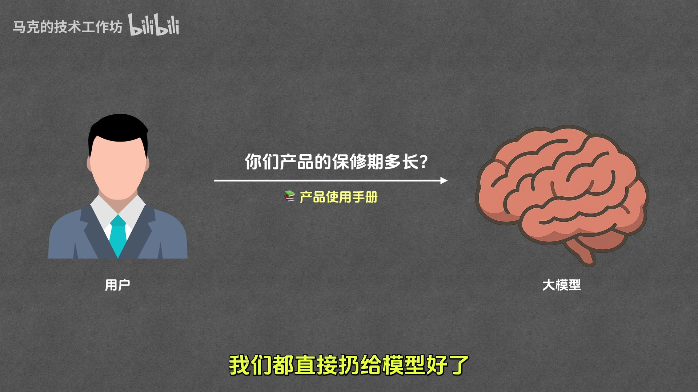
反正 Context Window 这么大，全部丢给它就行了 —— 这看起来没问题，但实际上行不通。 在实际使用过程中，我们仍然会遇到很多限制，必须考虑三个非常现实的问题：
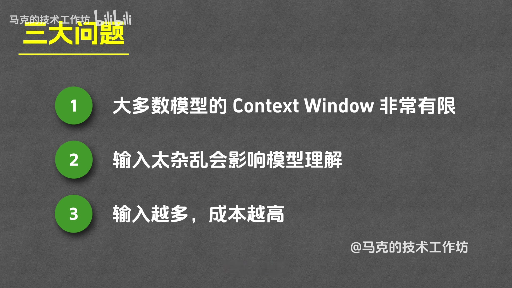
Gemini 2.5 Pro 的 100 万 Context Window 算是很大的了，大部分模型其实都没有这么大。 看看主流模型的实际大小：
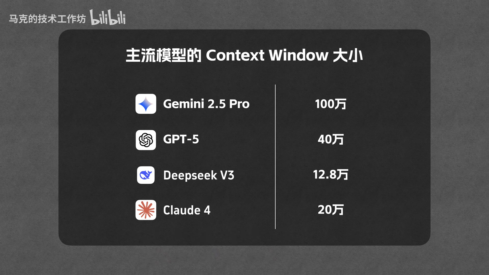
| 模型 | Context Window |
|---|---|
| Gemini 2.5 Pro | 100 万 |
| GPT-5 | 40 万 |
| Deepseek V3 | 12.8 万 |
| Claude 4 | 20 万 |
这些都还算是相当不错的模型了。很多时候为了节省成本，我们可能还会使用一些小模型， 它们的 Context Window 可能就只有几万 —— 连一个产品使用手册也装不下。
即使你所使用的模型有着非常大的 Context Window，即使我们给模型的输入量没有超过窗口上限， 你也最好不要把所有相关资料不加筛选全部丢给模型。
因为如果不加筛选，模型的输入可能就会非常杂乱、冗余矛盾。模型这个时候可能就会混淆重点， 输出含糊其辞的回答。
大语言模型的调用成本基本上都是按照 Token 来计费的。Token 的数量越多，消耗就会越大。
如果我们不加控制地塞入大量上下文内容，即使效果还行，也可能会带来不必要的开销 —— 尤其是在产品化和大规模使用时。
所以可以看到，直接把所有资料都发给大模型的方案是行不通的，这里存在很多问题。 那该如何解决它们呢？这就引出 Context Engineering 了。
不改变模型，只改变模型看到什么
Context Engineering 翻译成中文就是上下文工程。从字面上来看， 它似乎就是针对 Context 所做的一些技术。回想一下 Context 的含义 —— Context 代表给模型的输入，那 Context Engineering 的含义就是对模型输入做优化了。
简单来说，Context Engineering 关注的不是怎么训练模型， 而是怎么精心设计给模型的输入内容，让模型在有限的 Context Window 里面尽可能的理解得更准、答得更好、花得更少。
其实 Context 这个概念一直都存在，但是 Context Engineering 这个词确实最近一段时间才活起来的。
两个原因
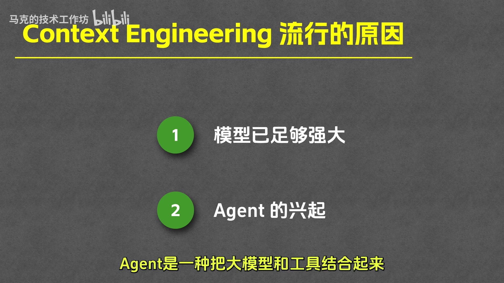
跟一两年前的模型相比，现在的模型强大的不是一点半点。对于现在的模型来说， 你只要给到它足够精细的要求，给到它足够完整的相关资料， 模型就可以给出非常准确、有用的回答。
Agent 是一种把大模型和工具结合起来，让模型能够独立感知环境、影响环境，从而解决用户问题的技术。
Agent 的运行涉及到模型对工具的使用，所以可用工具信息、工具执行结果等等一系列的内容， 都会放到模型的输入里面。使用多少次工具，就会有多少个工具执行结果。
借鉴 LangChain 的设计框架
总的来说，Context Engineering 并不是某一项单一的技术， 而是由多种技术组成的方法体系。作者借鉴了 LangChain 的设计框架， 把这套技术体系划分为四类：
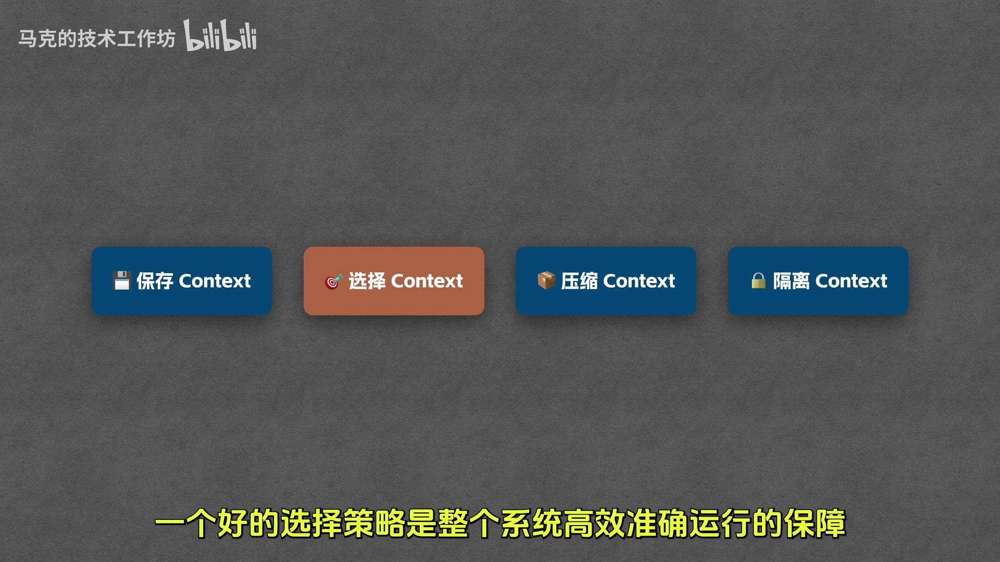
| 方法 | 解决的问题 | 典型例子 |
|---|---|---|
| 保存 Context | 信息持久化 —— 现在不用，但以后可能要用 | ChatGPT 记忆功能 |
| 选择 Context | 从海量信息中挑出当下最相关的（最核心） | Cursor Rules、CLAUDE.md、RAG |
| 压缩 Context | 历史消息越积越多，挤爆窗口 | Claude Code 的 Auto Compact |
| 隔离 Context | 不同模块互相干扰 | Multi-Agent 系统的 SubAgent |
把信息存起来，需要时再取
保存 Context 就是说，我们把 Context 做个筛选、总结，并且找个地方保存起来 （比如内存、硬盘这类的地方），在模型需要的时候再发给模型。
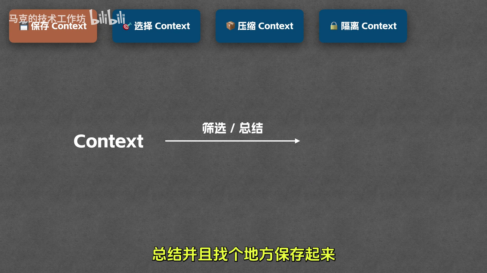
这里一个比较典型的例子，就是 ChatGPT 的记忆功能。
比如我可能在某次聊天的过程中告诉它：我的名字是马克，我有一个频道叫做马克的技术工作坊， 在这个频道里面我分享过关于 Agent、RAG、MCP、A2A 等相关的内容，记住这些！
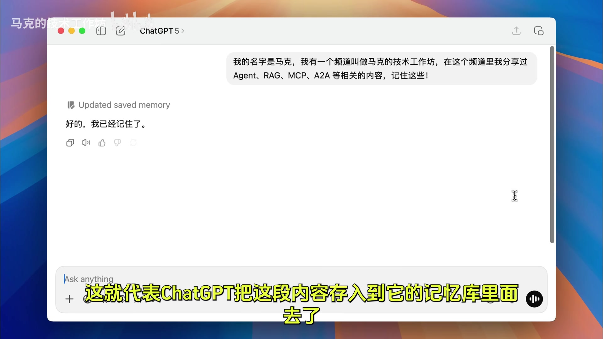
注意到这个 Updated saved memory 了吗？这就代表 ChatGPT 把这段内容存入到它的记忆库里面去了。 我们可以打开记忆库来证实这一点。
但光存下来还不够。ChatGPT 的记忆库是可以存放很多条记录的， 那在未来的对话中，ChatGPT 是如何从这个庞大的记忆库里面精准地找到它所需要的信息呢？ 这就引出了下一个，也就是最核心的技术 —— 选择 Context。
最核心的一环：从海量信息里挑出当下需要的
所谓选择 Context，就是从海量的信息中选择出一部分与用户问题最为相关的内容， 并且把它们放在模型的 Context 里面。
作者把选择策略分为两类：静态选择和动态选择。
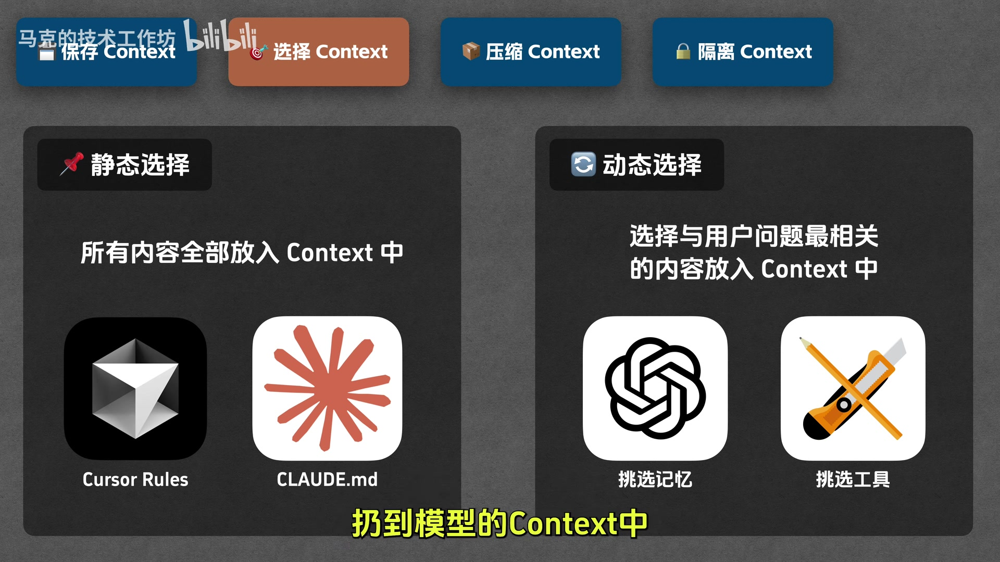
静态选择就是把一些永远重要、必须要遵守的信息，在每一次请求时都全部放到 Context 里面。 它就像是给 AI 刻在脑子里的系统指令，或者是核心原则。
比如 Cursor 的 Rules 文件、Claude Code 的 CLAUDE.md 文件 —— 这些文件指定了当前项目的一些信息、编码时需要遵守的一些规范等等。 这些信息至关重要：无论用户问什么，这些信息都必须在场， 以确保 AI 的行为符合预期。
动态选择是指选择与用户问题最为相关的内容，并且把它放入到 Context 里面。 它不是把所有的东西都塞进去，而是像一个聪明的图书管理员，为你精准地找到需要的那几页。
比如 ChatGPT 从记忆库中挑选与用户问题最为相关的记忆，这就是一种动态选择。 再比如我们从包含数十个甚至数百个工具中，挑选与用户问题最为相关的三个工具放到模型的 Context 里面， 这也是一种动态选择。
历史消息越积越多，得想办法瘦身
Agent 运行时会在 Context 里面积累大量的历史消息。一般来说，这些历史消息中最占空间的 便是模型的输出文本和工具的执行结果。
如果不做处理的话，这些历史消息便会迅速占满 Context 的全部空间，从而影响模型的后续回答效果。
一个常见的处理方法就是压缩历史消息。举一个具体的例子 —— 大家熟悉的 Claude Code， 它是一个用于写代码的 Agent。
在它运行的过程中，它可能会读取很多代码内容，同时也会写入很多代码内容， 然后 Claude 可能还会输出一些思考和结论，这些都会放到 Context 里面：
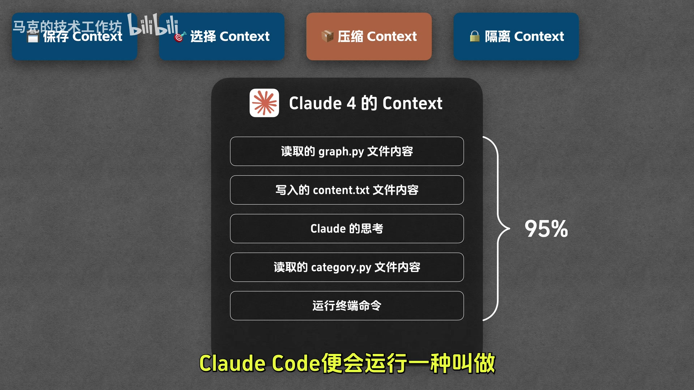
如果 Claude Code 不对这些内容做处理的话，那么它的 Context Window 很快就会被各种代码信息挤爆。
用户甚至还可以在 CLAUDE.md 里面指定压缩方案。 比如 Claude Code 官方文档里举的例子，就是让 Claude Code 压缩时重点保留测试输出和代码改动方面的内容：
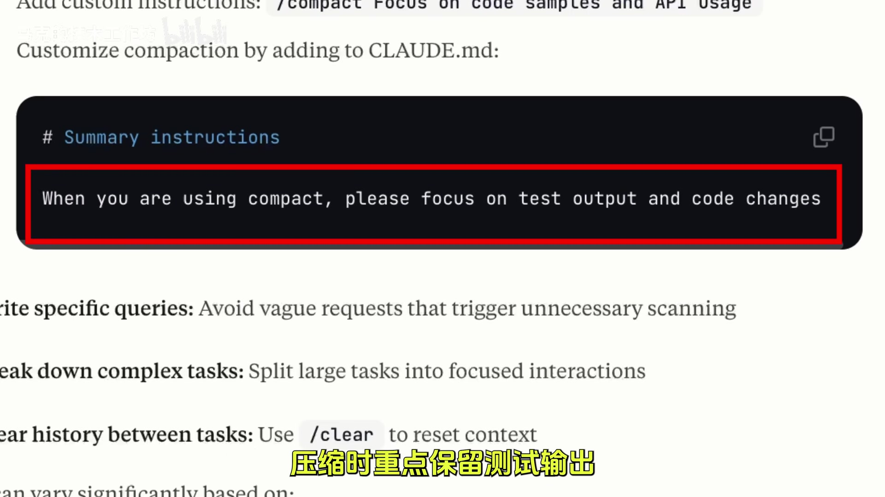
# Summary instructions
When you are using compact, please focus on test output and code changes这就把「压缩」从一种固定的自动行为，变成了可配置的策略 —— 你可以告诉它压缩时别丢掉你最在意的信息。
让不同模块各管各的，互不干扰
隔离 Context 意思就是说，不同模块之间的 Context 是互相隔离的、互不干扰。 这通常发生在 Multi-Agent（多智能体）系统里面。
可以用 Anthropic 的一篇文章来举例，它讲述了 Anthropic 是怎么构建他们的 Multi-Agent 研究系统的。 在文章中 Anthropic 提到，系统内部有一个 Lead Agent， 它负责任务下发和归纳总结 —— 你可以把它想象为整个系统的总指挥官。
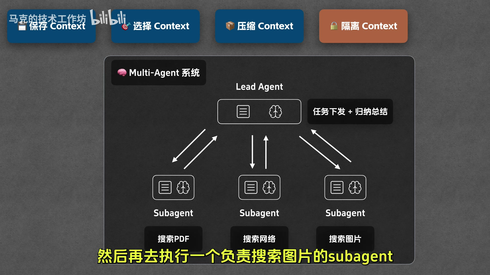
整个流程是这样的：
除此之外，Claude Code 里面也有一个 SubAgent 的概念，跟上面 Multi-Agent 研究系统里面的 SubAgent 有点像， 但并不完全一样。在 Claude Code 中，每个 SubAgent 也都有着自己独立的 Context，互相隔离。
回顾四个核心概念，以及作者推荐的两篇文章
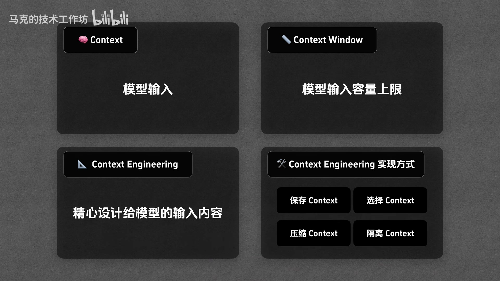
| 概念 | 含义 |
|---|---|
| Context | 模型的输入 |
| Context Window | 模型输入的容量上限，一般以 Token 数量为单位（如 Gemini 2.5 Pro 是 100 万） |
| Context Engineering | 精心设计给模型的输入内容，让模型在有限的 Context Window 里理解得更准、答得更好、花得更少 |
| 四大实现角度 | 保存 Context、选择 Context、压缩 Context、隔离 Context |
1. LangChain《Context Engineering》
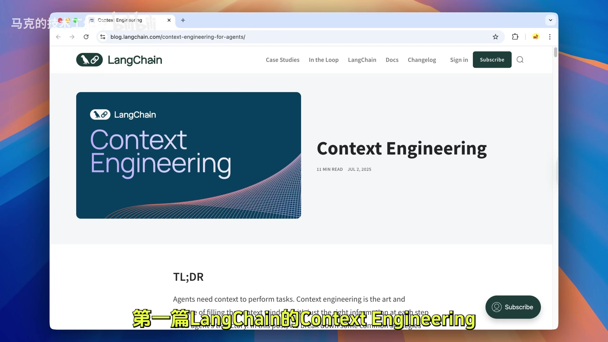
这篇文章系统讲述了 Context Engineering 的概念和方法，通读一遍可以学到很多东西。 本视频也借鉴了这篇文章中的不少内容。
blog.langchain.com/context-engineering-for-agents/
2. Cognition《Don't Build Multi-Agents》
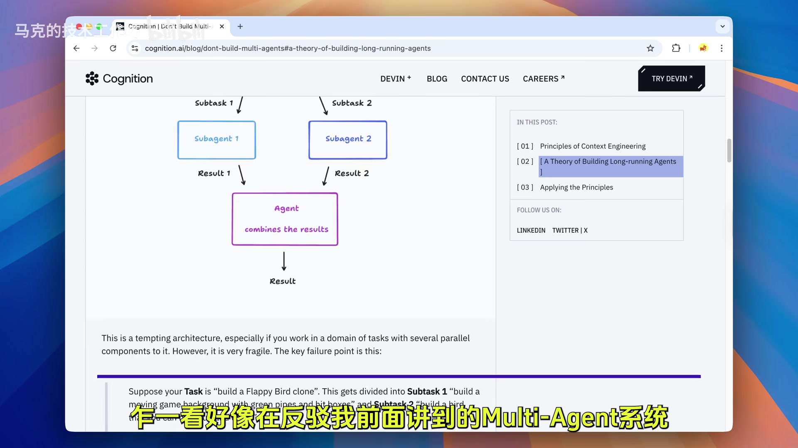
这个标题乍一看好像是在反驳前面讲到的 Multi-Agent 系统，其实不然。 如果你仔细看一下这篇文章的话，你就会发现它其实并没有反驳 Multi-Agent 系统， 它只是认为多个 Agent 并行执行的方法是行不通的。
把整期视频压缩成一张表
| 问题 | 结论 |
|---|---|
| Context 是什么？ | 模型的输入，包括用户问题、背景信息、相关资料、可用工具列表、工具执行结果、历史对话 |
| Context Window 是什么？ | 模型的输入中最多能包含的 Token 数量 |
| Token 怎么换算？ | 1 Token ≈ 0.75 个单词 ≈ 1.5 个汉字 |
| 超过 Context Window 会怎样？ | 前面的内容被丢弃，只保留最后的 N 个 Token |
| 主流模型的窗口有多大？ | Gemini 2.5 Pro 100 万、GPT-5 40 万、Claude 4 20 万、Deepseek V3 12.8 万 |
| 为什么不把所有资料都丢进去？ | 三大问题：窗口有限、输入杂乱会干扰理解、输入越多成本越高 |
| Context Engineering 是什么？ | 精心设计给模型的输入内容，让模型在有限窗口里更准、更好、更省 |
| 它的核心思想？ | 不改变模型的结构，只改变模型看到什么 |
| 为什么现在才火？ | ① 模型已足够强大 ② Agent 兴起，工具执行结果会占满窗口 |
| 有哪四类实现方法？ | 保存 Context、选择 Context、压缩 Context、隔离 Context |
| 什么是保存 Context？ | 把 Context 筛选、总结后存到内存/硬盘，需要时再发给模型；例：ChatGPT 记忆功能 |
| 静态选择 vs 动态选择？ | 静态＝永远重要的信息每次全放（Cursor Rules / CLAUDE.md）；动态＝按问题挑最相关的 |
| 动态选择最有名的实现？ | RAG（检索增强生成） |
| 压缩 Context 的典型例子？ | Claude Code 用量超过 95% 时触发 Auto Compact，总结旧内容并丢弃原文 |
| 压缩方案能自定义吗？ | 能，写在 CLAUDE.md 里，例如「压缩时重点保留测试输出和代码改动」 |
| 什么是隔离 Context？ | 不同模块的 Context 互相隔离、互不干扰；典型场景是 Multi-Agent 系统 |
| Anthropic 的 Multi-Agent 怎么分工？ | Lead Agent 做任务下发和归纳总结，SubAgent 分别搜 PDF / 网络 / 图片，各自有独立 Context |
| Context Engineering 是某一项技术吗？ | 不是，它是某一类技术的统称 |
视频中出现的关键概念
| 术语 | 英文 | 解释 |
|---|---|---|
| Context | Context | 模型的输入，包含问题、背景、资料、工具信息与历史对话等 |
| Context Window | Context Window | 模型输入的容量上限，以 Token 数量为单位 |
| Token | Token | 文本被拆分的最小单位，1 Token ≈ 0.75 单词 ≈ 1.5 汉字 |
| Context Engineering | Context Engineering | 上下文工程：精心设计给模型的输入内容，是一类技术的统称 |
| 保存 Context | Save / Store | 筛选、总结后持久化保存，需要时再注入 Context |
| 选择 Context | Select | 从海量信息中挑出与问题最相关的部分，分静态与动态两类 |
| 静态选择 | Static Selection | 永远重要的信息每次请求都全部放入，如 Cursor Rules、CLAUDE.md |
| 动态选择 | Dynamic Selection | 按用户问题挑选最相关内容，如挑选记忆、挑选工具、RAG |
| 压缩 Context | Compress | 总结并丢弃旧的历史消息，避免挤爆窗口 |
| Auto Compact | Auto Compact | Claude Code 在用量超过 95% 时自动压缩 Context 的机制 |
| 隔离 Context | Isolate | 让不同模块各自拥有独立 Context，互不干扰 |
| Multi-Agent | Multi-Agent System | 多智能体系统，由 Lead Agent 与若干 SubAgent 组成 |
| Lead Agent | Lead Agent | 多智能体系统中的总指挥，负责任务下发与归纳总结 |
| SubAgent | SubAgent | 子智能体，有独立的工具、运行历史与记忆体系 |
| RAG | Retrieval-Augmented Generation | 检索增强生成，动态选择最著名的实现方式 |
| CLAUDE.md | CLAUDE.md | Claude Code 的项目配置文件，可承载静态选择信息与压缩方案 |